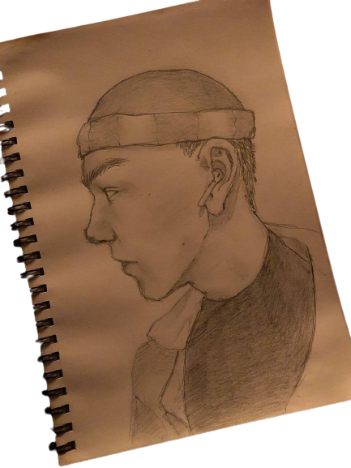

Я часто пишу щось красиве
І часто пишу щось про тебе
Я часто думаю наскільки
Наскільки ж ти у мене мила
Про очі схожі так на море
Волосся кольору любові
Твої прекрасні милі щічки
Що зараз бачу у ві снах
Про губи твої смаку щастя
Усмішку через яку я можу впасти
І такі гарні ніжні руки
Які хотів би цілувати - та не можу
І так буває , так стається
Але так важко тут без тебе
Весь світ похмурим в раз здається
Коли кохаєш лиш ві сні
